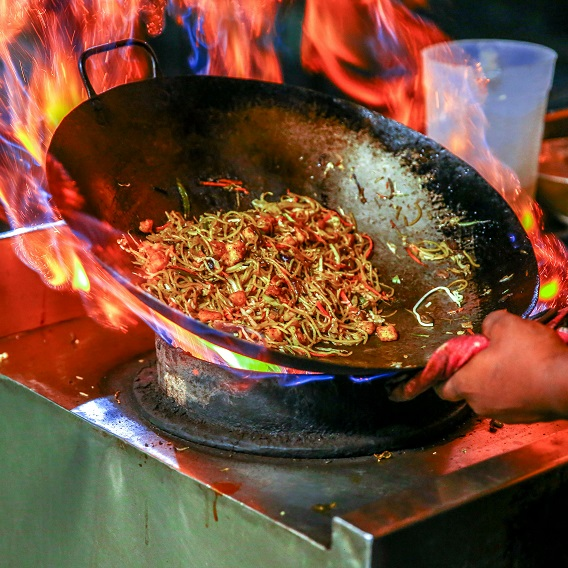

Veg Hakka Noodle is a tasty Indo Chinese dish of fried veggie balls in a spicy, sweet and tangy sauce. There are 2 popular variations of making veg Hakka Noodle.
Veg Hakka Noodle Gravy (With Sauce) – Makes for a tasty Chinese Main Course. Goes best with fried rice, schezwan fried rice or steamed rice.
Veg Manchurian Dry – An excellent starter snack or as a side dish with hakka noodles or chow mein.
Step 1 – making veg manchurian balls
Step 2 – frying veg manchurian balls
Step 3 – making manchurian gravy or sauce